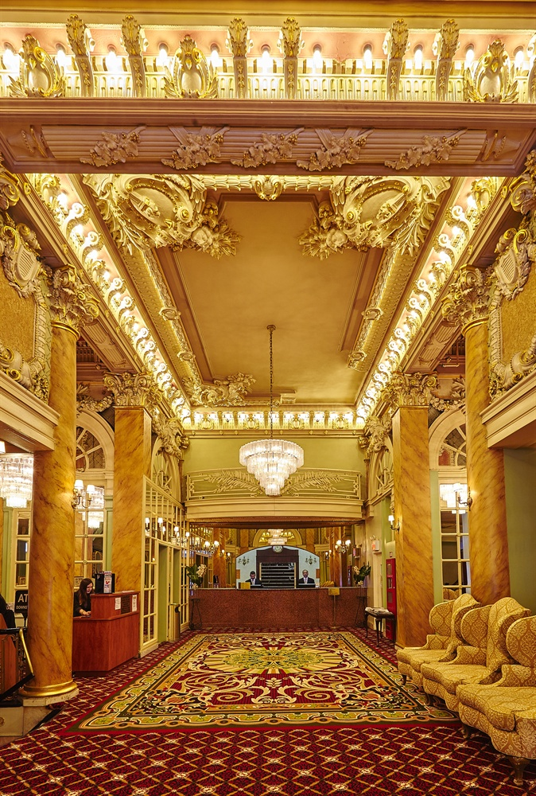

Hotel Wolcott relies on history, value - and the occasional haunting- to keep guests coming. Some guests say they’ve seen children playing; employees have heard a phantom radio. Every building needs a shepherd, especially magnificent historic ones that may or may not have a couple of friendly ghosts running around.
"Guests have seen two young ghosts wearing pajamas and playing at the lobby's stairwell."
In its 1900s heyday, the Wolcott Hotel was a true showstopper on a booming section of 5th Avenue famous for townhouse mansions owned by big-time New Yorkers. Today, the neighborhood has changed and mansions have mostly been replaced with budget hotels and shopping chains, but the historic Wolcott still stands out. And the gold cherubs and marble columns aren't the only things that linger from the hotel's past. Guests have reportedly seen two young boys wearing pajamas and playing at the top of the lobby's stairwell. Another alleged ghostly guest is an elderly man with a cane who wanders the hallways. Delivery workers have felt an unknown presence and touch in the hotel's magnificent ballrooms, which are not open to the public.
_____________________________________________________